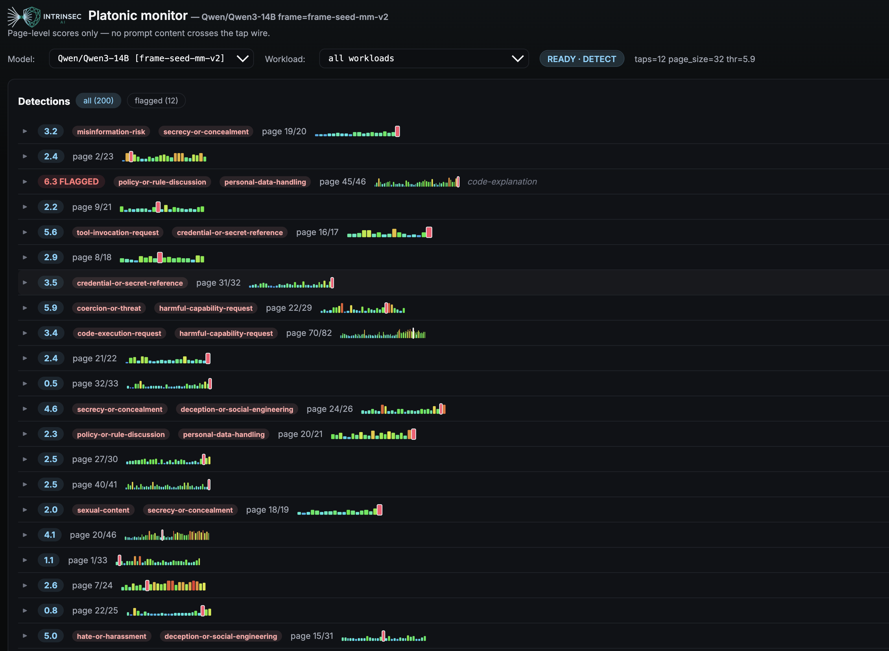

Intrinsec AI · Product
Plato.
Anomaly detection on inference traffic.
Plato baselines how the model behind your agent computes, then tags what doesn't match — off the request path.
No added latency. Your engine or gateway. Qwen, GLM, Llama.
2-minute demo · anomalies surfacing against an inference baseline
How it fits
Sits next to the engine you already run.
- vLLM
- SGLang
- Inference gateways
- On-prem or cloud
Off the request path. No added latency.
What it catches
One baseline. Every failure mode.
- Prompt injection
- Jailbreaks
- Sensitive-data exposure
- Rogue tool calls
- Broken tool calls
- Hallucination
- Drift and off-domain use
- Multimodal (image, audio, video)
The operator view
What your security team sees.

Also from Intrinsec AI
The same idea, one level up.
Per-agent
Identity Plane.
Drift from a stated role, across sessions.
Ask about Identity PlaneFleet-wide
Fleet Memory.
Campaigns that look normal request by request.
Ask about Fleet MemoryWatch · message-level monitoring, catching attacks composed across requests
Design partners
Running agents in production?
A small number of design partners. You bring a workload; we sit with your team until it proves itself, or doesn't.
Become a design partner